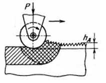

Отделочная поверхностная пластическая деформация производится на станках в основном в тех случаях, когда необходимо снизить шероховатость обработанной поверхности при невысоких требованиях к точности. Чаще это достигается тонкой пластической деформацией поверхности детали. При этом сглаживаются гребешки микронеровностей и образуется наклепанный слой металла глубиной до 3 мм, который обеспечивает повышение твердости поверхности детали примерно на 30%. Тонкая пластическая деформация поверхностного слоя металла может быть получена обкатыванием вращающимися роликами или шариками, а также выглаживанием инструментом из твердых или сверхтвердых материалов.
Сглаживающая и упрочняющая обработки различаются главным образом режимами деформирования и формой рабочей части ролика. Для упрочняющей обработки используют ролики кругового профиля с малым (3...8 мм) профильным радиусом, для чистовой ~ большим профильным радиусом или конические ролики малого диаметра (6...20 мм).
Обкатывание (для наружных поверхностей) и раскатывание (для внутренних поверхностей) обеспечивают отделочную и упрочняющую обработку наружных поверхностей деталей. Оба эти метода принципиально не отличаются друг от друга, но инструменты для обкатывания и раскатывания имеют свои особенности конструкции. Простейшие однороликовые или одношариковые накатные приспособления снабжены упругим элементом для поддержания постоянства силы накатывания. Эти приспособления устанавливают в резцедержателях металлообрабатывающих станков, в том числе с ЧПУ.
Перед операцией накатывания должна быть произведена предварительная обработка — точение, растачивание, фрезерование или шлифование. Твердость детали должна быть не более 45 HRC.
Накатыванием можно получить шероховатость поверхности Ra=0,4-0,05 мкм (8-11-го классов), при этом шероховатость поверхности детали до обкатывания должна быть на два класса ниже, т. е. 6-9-го классов.
Выглаживание — метод поверхностной пластической деформации, осуществляемый при скольжении инструмента по поверхности деформируемого материала. В качестве инструмента для выглаживания применяют наконечники различной формы. Материал наконечника — алмаз или сверхтвердые синтетические материалы. Наиболее часто в машиностроении используют процесс алмазного выглаживания.
Отличием алмазного выглаживания от накатывания является высокая твердость и малый профильный радиус деформирующих инструментов (0,5...4 мм). Это позволяет осуществлять локальное деформирование поверхностного слоя с малыми силами. В связи с этим рациональная область использования алмазного выглаживания — обработка закаленных деталей, сверхтвердых покрытий или деталей, имеющих малую жесткость.
Для алмазного выглаживания применяют, как правило, упругие державки, устанавливаемые на универсальные или специальные металлообрабатывающие станки.
Точность обработки при накатывании и выглаживании упругим инструментом остается на уровне исходной.